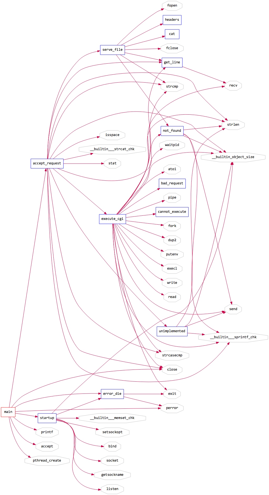
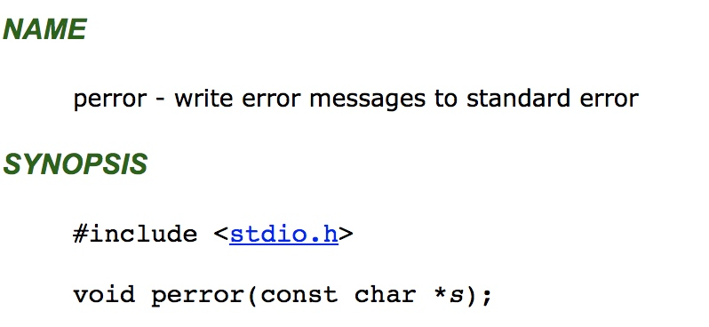

<!doctype html>
<html class="no-js" lang="en">
  <head>
    <meta charset="utf-8" />
    <meta name="viewport" content="width=device-width, initial-scale=1.0" />
    <title>
    
  小微http服务器Tinyhttpd源码分析 - xiaolin's blog
  
  </title>
  
  
  <link href="atom.xml" rel="alternate" title="xiaolin's blog" type="application/atom+xml">
    <link rel="stylesheet" href="asset/css/foundation.min.css" />
    <link rel="stylesheet" href="asset/css/docs.css" />
    <link rel="shortcut icon" href="favicon.ico">
    <script src="asset/js/vendor/modernizr.js"></script>
    <script src="asset/js/vendor/jquery.js"></script>
  <script src="asset/highlightjs/highlight.pack.js"></script>
  <link href="asset/highlightjs/styles/github.css" media="screen, projection" rel="stylesheet" type="text/css">
  <script>hljs.initHighlightingOnLoad();</script>
<script type="text/javascript">
  function before_search(){
    var searchVal = 'site:neatlifecoco.com ' + document.getElementById('search_input').value;
    document.getElementById('search_q').value = searchVal;
    return true;
  }
</script>
  </head>
  <body class="antialiased hide-extras">
    
    <div class="marketing off-canvas-wrap" data-offcanvas>
      <div class="inner-wrap">


<nav class="top-bar docs-bar hide-for-small" data-topbar>


  <section class="top-bar-section">
  <div class="row">
      <div style="position: relative;width:100%;"><div style="position: absolute; width:100%;">
        <ul id="main-menu" class="left">
        
        <li id=""><a target="_self" href="index.html">about</a></li>
        
        <li id=""><a target="_self" href="all.html">blog</a></li>
        
        <li id=""><a target="_self" href="archives.html">archive</a></li>
        
        <li id=""><a target="_self" href="tools.html">tools</a></li>
        
        <li id=""><a target="_self" href="pro.html">pros</a></li>
        
        <li id=""><a target="_self" href="pub.html">press</a></li>
        
        <li id=""><a target="_self" href="paper.html">paper</a></li>
        
        </ul>

        <ul class="right" id="search-wrap">
          <li>
<form target="_blank" onsubmit="return before_search();" action="https://google.com/search" method="get">
    <input type="hidden" id="search_q" name="q" value="" />
    <input tabindex="1" type="search" id="search_input"  placeholder="Search"/>
</form>
</li>
          </ul>
      </div></div>
  </div>
  </section>

</nav>

        <nav class="tab-bar show-for-small">
  <a href="javascript:void(0)" class="left-off-canvas-toggle menu-icon">
    <span> &nbsp; xiaolin's blog</span>
  </a>
</nav>

<aside class="left-off-canvas-menu">
      <ul class="off-canvas-list">
        
        <li><a target="_self" href="index.html">about</a></li>
        
        <li><a target="_self" href="all.html">blog</a></li>
        
        <li><a target="_self" href="archives.html">archive</a></li>
        
        <li><a target="_self" href="tools.html">tools</a></li>
        
        <li><a target="_self" href="pro.html">pros</a></li>
        
        <li><a target="_self" href="pub.html">press</a></li>
        
        <li><a target="_self" href="paper.html">paper</a></li>
        

    <li><label>Categories</label></li>

        
            <li><a href="macios.html">mac&ios</a></li>
        
            <li><a href="lc.html">leetcode</a></li>
        
            <li><a href="security.html">安全</a></li>
        
            <li><a href="business.html">业务</a></li>
        
            <li><a href="source-code.html">源码分析</a></li>
        
            <li><a href="redis.html">Redis</a></li>
        
            <li><a href="apache-nginx.html">Apache/Nginx</a></li>
        
            <li><a href="spring-boot.html">Spring Boot</a></li>
        
            <li><a href="pm.html">项目管理</a></li>
        
            <li><a href="sketch.html">sketch</a></li>
        
            <li><a href="sql.html">SQL</a></li>
        
            <li><a href="job-scheduler.html">任务调度</a></li>
        
            <li><a href="design-pattern.html">设计模式</a></li>
        
            <li><a href="mq.html">消息队列</a></li>
        
            <li><a href="rpc.html">RPC</a></li>
        
            <li><a href="bigfrontend.html">大前端</a></li>
        
            <li><a href="iOS.html">iOS</a></li>
        
            <li><a href="laravel.html">LARAVEL</a></li>
        
            <li><a href="tcp-ip.html">TCP/IP</a></li>
        
            <li><a href="uml.html">UML</a></li>
        
            <li><a href="service-mesh.html">SERVICE MESH</a></li>
        
            <li><a href="ci-cd.html">CI/CD</a></li>
        
            <li><a href="ops.html">OPS</a></li>
        
            <li><a href="linux.html">LINUX</a></li>
        
            <li><a href="system-programming.html">系统编程</a></li>
        
            <li><a href="aws.html">AWS</a></li>
        
            <li><a href="lua.html">LUA</a></li>
        
            <li><a href="git.html">GIT</a></li>
        
            <li><a href="js.html">js</a></li>
        
            <li><a href="java.html">JAVA</a></li>
        
            <li><a href="monitor.html">监控</a></li>
        
            <li><a href="vim.html">VIM</a></li>
        
            <li><a href="php.html">PHP</a></li>
        
            <li><a href="openresty.html">OpenResty</a></li>
        
            <li><a href="swoole.html">SWOOLE</a></li>
        
            <li><a href="ons.html">消息队列</a></li>
        
            <li><a href="gdb.html">GDB</a></li>
        
            <li><a href="specification.html">规范</a></li>
        
            <li><a href="3-minutes.html">三分钟系列</a></li>
        
            <li><a href="1-pic.html">一图胜千言</a></li>
        
            <li><a href="account-system.html">帐号系统</a></li>
        
            <li><a href="interview.html">面试题</a></li>
        
            <li><a href="yii.html">Yii/Yii2</a></li>
        
            <li><a href="python.html">python</a></li>
        
            <li><a href="go.html">GO</a></li>
        
            <li><a href="ml.html">机器学习</a></li>
        
            <li><a href="emacs.html">emacs</a></li>
        
            <li><a href="bi.html">商业智能</a></li>
        
            <li><a href="mac.html">mac</a></li>
        
            <li><a href="editor.html">编辑器</a></li>
        
            <li><a href="productive-soft.html">生产力工具</a></li>
        
            <li><a href="driver-license.html">驾照</a></li>
         

      </ul>
    </aside>

<a class="exit-off-canvas" href="#"></a>


        <section id="main-content" role="main" class="scroll-container">
        
       

 <script type="text/javascript">
  $(function(){
    $('#menu_item_index').addClass('is_active');
  });
</script>
<div class="row">
  <div class="large-8 medium-8 columns">
      <div class="markdown-body article-wrap">
       <div class="article">
          
          <h1>小微http服务器Tinyhttpd源码分析</h1>
     
        <div class="read-more clearfix">
          <span class="date">2019/6/17</span>

          <span>posted in&nbsp;</span> 
          
              <span class="posted-in"><a href='source-code.html'>源码分析</a></span>
           
         
          <span class="comments">
            

            
          </span>

        </div>
      </div><!-- article -->

      <div class="article-content">
      <p>完整源代码参考：<a href="https://github.com/EZLippi/Tinyhttpd/blob/master/httpd.c">https://github.com/EZLippi/Tinyhttpd/blob/master/httpd.c</a></p>

<p>这个项目的调用关系图如下</p>

<p></p>

<h2 id="toc_0">库文件</h2>

<pre><code class="language-c">#include &lt;stdio.h&gt; 提供perror函数
#include &lt;sys/socket.h&gt; 提供 accept等socket函数
#include &lt;sys/types.h&gt; 提供 u_short 类型
#include &lt;netinet/in.h&gt; 提供sockaddr_in结构体
#include &lt;arpa/inet.h&gt; 提供htons函数
#include &lt;unistd.h&gt; 提供close, dup, dup2等函数
#include &lt;ctype.h&gt; 提供isspace函数
#include &lt;strings.h&gt; 提供strcasecmp函数
#include &lt;string.h&gt; 提供strcat函数
#include &lt;sys/stat.h&gt; 提供检查文件是否存在的stat函数
#include &lt;pthread.h&gt; 提供pthread_create函数
#include &lt;sys/wait.h&gt; 提供wait函数
#include &lt;stdlib.h&gt; 提供printf函数
#include &lt;stdint.h&gt; 提供intptr_t类型
</code></pre>

<span id="more"></span><!-- more -->

<h2 id="toc_1">main函数</h2>

<pre><code class="language-c">int main(void)
{
    int server_sock = -1;
    u_short port = 4000;
    int client_sock = -1;
    struct sockaddr_in client_name;
    socklen_t  client_name_len = sizeof(client_name);
    pthread_t newthread;

    server_sock = startup(&amp;port);
    printf(&quot;httpd running on port %d\n&quot;, port);

    while (1)
    {
        client_sock = accept(server_sock,
                (struct sockaddr *)&amp;client_name,
                &amp;client_name_len);
        if (client_sock == -1)
            error_die(&quot;accept&quot;);
        /* accept_request(&amp;client_sock); */
        if (pthread_create(&amp;newthread , NULL, (void *)accept_request, (void *)(intptr_t)client_sock) != 0)
            perror(&quot;pthread_create&quot;);
    }

    close(server_sock);

    return(0);
}
</code></pre>

<p>结合上面代码和调用图，main函数中直接调用的函数如下：</p>

<ol>
<li>accept_request</li>
<li>close</li>
<li>error_die</li>
<li>startup</li>
<li>printf</li>
<li>accept</li>
<li>pthread_create</li>
</ol>

<p>其中close来自函数库<br/>
printf来自函数库<br/>
accept来自函数库<br/>
pthread_create来自函数库</p>

<p>main函数中主要调用了startup函数，并启动了一个死循环，使用socket的accept接受客户端的连接后，使用pthread_create函数启动了一个新的线程使用accept_request函数处理这个客户端的请求</p>

<p><strong>这个accept因为会同步阻塞，所以使用这个accept处理客户端连接的方式又称为BIO，如果这里使用select选出就绪的客户端就称为NIO了</strong></p>

<h2 id="toc_2">error_die函数</h2>

<pre><code class="language-c">void error_die(const char *sc)
{
    perror(sc);
    exit(1);
}
</code></pre>

<p>这个error_die函数比较简单，只是调用了perror函数后就退出了程序，所以调用error_die的地方都会退出程序</p>

<p>perror函数参考：<a href="https://pubs.opengroup.org/onlinepubs/009695399/functions/perror.html">https://pubs.opengroup.org/onlinepubs/009695399/functions/perror.html</a></p>

<p></p>

<h2 id="toc_3">startup函数</h2>

<pre><code class="language-c">int startup(u_short *port)
{
    int httpd = 0;
    int on = 1;
    struct sockaddr_in name;

    httpd = socket(PF_INET, SOCK_STREAM, 0);
    if (httpd == -1)
        error_die(&quot;socket&quot;);
    memset(&amp;name, 0, sizeof(name));
    name.sin_family = AF_INET;
    name.sin_port = htons(*port);
    name.sin_addr.s_addr = htonl(INADDR_ANY);
    if ((setsockopt(httpd, SOL_SOCKET, SO_REUSEADDR, &amp;on, sizeof(on))) &lt; 0)  
    {  
        error_die(&quot;setsockopt failed&quot;);
    }
    if (bind(httpd, (struct sockaddr *)&amp;name, sizeof(name)) &lt; 0)
        error_die(&quot;bind&quot;);
    if (*port == 0)  /* if dynamically allocating a port */
    {
        socklen_t namelen = sizeof(name);
        if (getsockname(httpd, (struct sockaddr *)&amp;name, &amp;namelen) == -1)
            error_die(&quot;getsockname&quot;);
        *port = ntohs(name.sin_port);
    }
    if (listen(httpd, 5) &lt; 0)
        error_die(&quot;listen&quot;);
    return(httpd);
}
</code></pre>

<p>startup函数直接调用了</p>

<ol>
<li>error_die</li>
<li>setsockopt</li>
<li>bind</li>
<li>socket</li>
<li>getsockname</li>
<li>listen</li>
</ol>

<p>这个startup直接调用的所有函数都是来自socket.h函数库，参考：<a href="https://pubs.opengroup.org/onlinepubs/009695399/functions/socket.html">https://pubs.opengroup.org/onlinepubs/009695399/functions/socket.html</a></p>

<p>这个函数主要是创建了一个socket服务器并在4000端口进行监听，如果有客户端连接这个4000端口，使用socket的accept函数可以和这个客户端进行通信</p>

<h2 id="toc_4">accept_request函数</h2>

<pre><code class="language-c">void accept_request(void *arg)
{
    int client = (intptr_t)arg;
    char buf[1024];
    size_t numchars;
    char method[255];
    char url[255];
    char path[512];
    size_t i, j;
    struct stat st;
    int cgi = 0;      /* becomes true if server decides this is a CGI
                       * program */
    char *query_string = NULL;

    numchars = get_line(client, buf, sizeof(buf));
    i = 0; j = 0;
    while (!ISspace(buf[i]) &amp;&amp; (i &lt; sizeof(method) - 1))
    {
        method[i] = buf[i];
        i++;
    }
    j=i;
    method[i] = &#39;\0&#39;;

    if (strcasecmp(method, &quot;GET&quot;) &amp;&amp; strcasecmp(method, &quot;POST&quot;))
    {
        unimplemented(client);
        return;
    }

    if (strcasecmp(method, &quot;POST&quot;) == 0)
        cgi = 1;

    i = 0;
    while (ISspace(buf[j]) &amp;&amp; (j &lt; numchars))
        j++;
    while (!ISspace(buf[j]) &amp;&amp; (i &lt; sizeof(url) - 1) &amp;&amp; (j &lt; numchars))
    {
        url[i] = buf[j];
        i++; j++;
    }
    url[i] = &#39;\0&#39;;

    if (strcasecmp(method, &quot;GET&quot;) == 0)
    {
        query_string = url;
        while ((*query_string != &#39;?&#39;) &amp;&amp; (*query_string != &#39;\0&#39;))
            query_string++;
        if (*query_string == &#39;?&#39;)
        {
            cgi = 1;
            *query_string = &#39;\0&#39;;
            query_string++;
        }
    }

    sprintf(path, &quot;htdocs%s&quot;, url);
    if (path[strlen(path) - 1] == &#39;/&#39;)
        strcat(path, &quot;index.html&quot;);
    if (stat(path, &amp;st) == -1) {
        while ((numchars &gt; 0) &amp;&amp; strcmp(&quot;\n&quot;, buf))  /* read &amp; discard headers */
            numchars = get_line(client, buf, sizeof(buf));
        not_found(client);
    }
    else
    {
        if ((st.st_mode &amp; S_IFMT) == S_IFDIR)
            strcat(path, &quot;/index.html&quot;);
        if ((st.st_mode &amp; S_IXUSR) ||
                (st.st_mode &amp; S_IXGRP) ||
                (st.st_mode &amp; S_IXOTH)    )
            cgi = 1;
        if (!cgi)
            serve_file(client, path);
        else
            execute_cgi(client, path, method, query_string);
    }

    close(client);
}
</code></pre>

<p>这个accept_request函数代码接近100行，这个函数中对客户端的请求进行了处理<br/>
主要职责如下：</p>

<ol>
<li>解析http请求中的method，比如get， post，put，delete等, 一个http请求示例如下
<code>
GET /onlinepubs/009695399/functions/socket.html HTTP/1.1<br/>
Host: pubs.opengroup.org
</code></li>
<li>如果是get请求，获取请求的uri，比如上面的示例对应的uri就是/onlinepubs/009695399/functions/socket.html</li>
<li>不允许GET, POST以外的所有请求</li>
</ol>

<h2 id="toc_5">参考资料</h2>

<ol>
<li>close函数参考：<a href="https://pubs.opengroup.org/onlinepubs/009695399/functions/close.html">https://pubs.opengroup.org/onlinepubs/009695399/functions/close.html</a></li>
<li>isspace函数参考：<a href="https://pubs.opengroup.org/onlinepubs/009695399/functions/isspace.html">https://pubs.opengroup.org/onlinepubs/009695399/functions/isspace.html</a></li>
<li>stat函数参考：<a href="https://pubs.opengroup.org/onlinepubs/009695399/functions/stat.html">https://pubs.opengroup.org/onlinepubs/009695399/functions/stat.html</a></li>
<li>ctype.h参考：<a href="https://www.tutorialspoint.com/c_standard_library/ctype_h.htm">https://www.tutorialspoint.com/c_standard_library/ctype_h.htm</a></li>
<li>string.h参考：<a href="https://www.tutorialspoint.com/c_standard_library/string_h.htm">https://www.tutorialspoint.com/c_standard_library/string_h.htm</a></li>
<li>strings.h参考：<a href="https://pubs.opengroup.org/onlinepubs/7908799/xsh/strings.h.html">https://pubs.opengroup.org/onlinepubs/7908799/xsh/strings.h.html</a></li>
<li>wait.h参考：<a href="https://pubs.opengroup.org/onlinepubs/7908799/xsh/syswait.h.html">https://pubs.opengroup.org/onlinepubs/7908799/xsh/syswait.h.html</a></li>
<li>netinet/in.h参考：<a href="http://pubs.opengroup.org/onlinepubs/009695399/basedefs/netinet/in.h.html">http://pubs.opengroup.org/onlinepubs/009695399/basedefs/netinet/in.h.html</a></li>
<li>arpa/inet.h参考：<a href="http://pubs.opengroup.org/onlinepubs/007908799/xns/arpainet.h.html">http://pubs.opengroup.org/onlinepubs/007908799/xns/arpainet.h.html</a></li>
<li>stdint.h参考：<a href="https://pubs.opengroup.org/onlinepubs/009695399/basedefs/stdint.h.html">https://pubs.opengroup.org/onlinepubs/009695399/basedefs/stdint.h.html</a></li>
</ol>

<p>持续更新...</p>


    

      </div>

      <div class="row">
        <div class="large-6 columns">
        <p class="text-left" style="padding:15px 0px;">
      
          <a href="15610043911296.html" 
          title="Previous Post: xaop源码分析">&laquo; xaop源码分析</a>
      
        </p>
        </div>
        <div class="large-6 columns">
      <p class="text-right" style="padding:15px 0px;">
      
          <a  href="15602252455163.html" 
          title="Next Post: 在mac os中使用phpbrew管理本地php版本">在mac os中使用phpbrew管理本地php版本 &raquo;</a>
      
      </p>
        </div>
      </div>
      <div class="comments-wrap">
        <div class="share-comments">
          <script src="https://utteranc.es/client.js"
        repo="neatlife/neatlife.github.io"
        issue-term="pathname"
        theme="github-light"
        crossorigin="anonymous"
        async>
</script>


          

          
        </div>
      </div>
    </div><!-- article-wrap -->
  </div><!-- large 8 -->


 <div class="large-4 medium-4 columns">
  <div class="hide-for-small">
    <div id="sidebar" class="sidebar">
          <div id="site-info" class="site-info">
            
                <h1>xiaolin's blog</h1>
                <div class="site-des">core tech share blog</div>
                <div class="social">
                  <a target="_blank" class="juejin" href="https://juejin.im/user/5c409f86e51d4551c88027a2/posts" title="Juejin">juejin</a>


<a target="_blank" class="github" target="_blank" href="https://github.com/neatlife" title="GitHub">GitHub</a>

  <a target="_blank" class="rss" href="atom.xml" title="RSS">RSS</a>
                
              	 </div>
          	</div>

             

              <div id="site-categories" class="side-item ">
                <div class="side-header">
                  <h2>Categories</h2>
                </div>
                <div class="side-content">

      	<p class="cat-list">
        
            <a href="macios.html"><strong>mac&ios</strong></a>
        
            <a href="lc.html"><strong>leetcode</strong></a>
        
            <a href="security.html"><strong>安全</strong></a>
        
            <a href="business.html"><strong>业务</strong></a>
        
            <a href="source-code.html"><strong>源码分析</strong></a>
        
            <a href="redis.html"><strong>Redis</strong></a>
        
            <a href="apache-nginx.html"><strong>Apache/Nginx</strong></a>
        
            <a href="spring-boot.html"><strong>Spring Boot</strong></a>
        
            <a href="pm.html"><strong>项目管理</strong></a>
        
            <a href="sketch.html"><strong>sketch</strong></a>
        
            <a href="sql.html"><strong>SQL</strong></a>
        
            <a href="job-scheduler.html"><strong>任务调度</strong></a>
        
            <a href="design-pattern.html"><strong>设计模式</strong></a>
        
            <a href="mq.html"><strong>消息队列</strong></a>
        
            <a href="rpc.html"><strong>RPC</strong></a>
        
            <a href="bigfrontend.html"><strong>大前端</strong></a>
        
            <a href="iOS.html"><strong>iOS</strong></a>
        
            <a href="laravel.html"><strong>LARAVEL</strong></a>
        
            <a href="tcp-ip.html"><strong>TCP/IP</strong></a>
        
            <a href="uml.html"><strong>UML</strong></a>
        
            <a href="service-mesh.html"><strong>SERVICE MESH</strong></a>
        
            <a href="ci-cd.html"><strong>CI/CD</strong></a>
        
            <a href="ops.html"><strong>OPS</strong></a>
        
            <a href="linux.html"><strong>LINUX</strong></a>
        
            <a href="system-programming.html"><strong>系统编程</strong></a>
        
            <a href="aws.html"><strong>AWS</strong></a>
        
            <a href="lua.html"><strong>LUA</strong></a>
        
            <a href="git.html"><strong>GIT</strong></a>
        
            <a href="js.html"><strong>js</strong></a>
        
            <a href="java.html"><strong>JAVA</strong></a>
        
            <a href="monitor.html"><strong>监控</strong></a>
        
            <a href="vim.html"><strong>VIM</strong></a>
        
            <a href="php.html"><strong>PHP</strong></a>
        
            <a href="openresty.html"><strong>OpenResty</strong></a>
        
            <a href="swoole.html"><strong>SWOOLE</strong></a>
        
            <a href="ons.html"><strong>消息队列</strong></a>
        
            <a href="gdb.html"><strong>GDB</strong></a>
        
            <a href="specification.html"><strong>规范</strong></a>
        
            <a href="3-minutes.html"><strong>三分钟系列</strong></a>
        
            <a href="1-pic.html"><strong>一图胜千言</strong></a>
        
            <a href="account-system.html"><strong>帐号系统</strong></a>
        
            <a href="interview.html"><strong>面试题</strong></a>
        
            <a href="yii.html"><strong>Yii/Yii2</strong></a>
        
            <a href="python.html"><strong>python</strong></a>
        
            <a href="go.html"><strong>GO</strong></a>
        
            <a href="ml.html"><strong>机器学习</strong></a>
        
            <a href="emacs.html"><strong>emacs</strong></a>
        
            <a href="bi.html"><strong>商业智能</strong></a>
        
            <a href="mac.html"><strong>mac</strong></a>
        
            <a href="editor.html"><strong>编辑器</strong></a>
        
            <a href="productive-soft.html"><strong>生产力工具</strong></a>
        
            <a href="driver-license.html"><strong>驾照</strong></a>
         
        </p>


                </div>
              </div>

              <div id="site-categories" class="side-item">
                <div class="side-header">
                  <h2>Recent Posts</h2>
                </div>
                <div class="side-content">
                <ul class="posts-list">
	      
		      
			      <li class="post">
			        <a href="16256216793335.html">html还原设计图开发心历路程</a>
			      </li>
		     
		  
		      
			      <li class="post">
			        <a href="16226333235156.html">用sketch原型工具3秒制作一个按钮</a>
			      </li>
		     
		  
		      
			      <li class="post">
			        <a href="16215677290066.html">三分钟制作一个iOS全局弹窗</a>
			      </li>
		     
		  
		      
			      <li class="post">
			        <a href="16081898834624.html">OSX使用代码代替storyboard构建项目，并添加NSSplitView组件</a>
			      </li>
		     
		  
		      
			      <li class="post">
			        <a href="16005640944829.html">linux系统编程之多进程和管道（pip）</a>
			      </li>
		     
		  
		      
		  
		      
		  
		      
		  
		      
		  
		      
		  
		      
		  
		      
		  
		      
		  
		      
		  
		      
		  
		      
		  
		      
		  
		      
		  
		      
		  
		      
		   
		  		</ul>
                </div>
              </div>
        </div><!-- sidebar -->
      </div><!-- hide for small -->
</div><!-- large 4 -->

</div><!-- row -->

 <div class="page-bottom clearfix">
  <div class="row">
   <p class="copyright">Copyright &copy; 2015
Theme used <a target="_blank" href="http://github.com">GitHub CSS</a>.
<span id="busuanzi_container_site_uv">访问<span id="busuanzi_value_site_uv"></span>人</span>/
        <span id="busuanzi_container_site_pv"><span id="busuanzi_value_site_pv"></span>次</span>
    </p>
  </div>
</div>

        </section>
      </div>
    </div>

  
    

    <script src="asset/js/foundation.min.js"></script>
    <script>
      $(document).foundation();
      function fixSidebarHeight(){
        var w1 = $('.markdown-body').height();
          var w2 = $('#sidebar').height();
          if (w1 > w2) { $('#sidebar').height(w1); };
      }
      $(function(){
        fixSidebarHeight();
      })
      $(window).load(function(){
          fixSidebarHeight();
      });
     
    </script>

    

<!-- Global site tag (gtag.js) - Google Analytics -->
<script async src="https://www.googletagmanager.com/gtag/js?id=UA-138141150-1"></script>
<script>
  window.dataLayer = window.dataLayer || [];
  function gtag(){dataLayer.push(arguments);}
  gtag('js', new Date());

  gtag('config', 'UA-138141150-1');
</script>

<canvas class="fireworks" 
        style="position: fixed; left: 0px; top: 0px; z-index: 99999999; pointer-events: none; width: 1158px; height: 916px;" 
        width="2316" 
        height="1832">
</canvas>
    <script src="asset/js/anime.min.js"></script>
    <script src="asset/js/fireworks.js"></script>
    <script async src="//busuanzi.ibruce.info/busuanzi/2.3/busuanzi.pure.mini.js"></script>
  </body>
</html>
